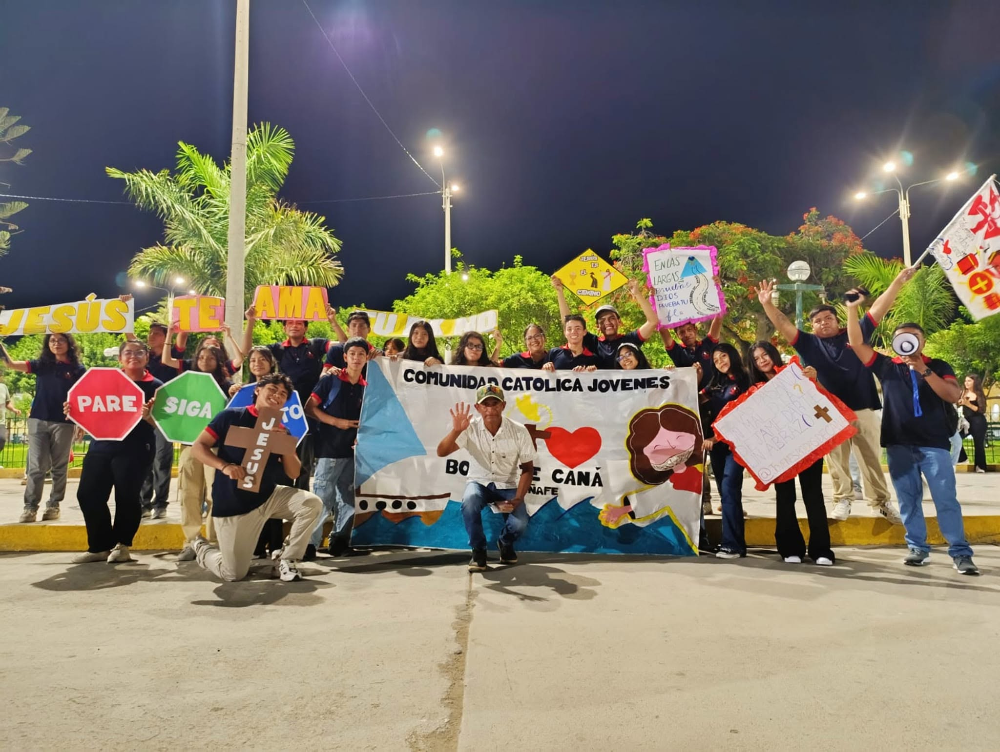

De Ferreñafe para Ferreñafe
Jóvenes Bodas de Caná (JBC) es un grupo juvenil católico que surge del deseo de un grupo de amigos de la fe por compartir la alegría del Evangelio con otros jóvenes de su ciudad. Tomamos nuestro nombre del pasaje de Juan 2, donde María, atenta a las necesidades de los demás, le pide a Jesús que actúe, y los sirvientes obedecen sin entender del todo el porqué, confiando simplemente en su palabra.
Así entendemos también nuestra vocación como jóvenes: estar atentos a las necesidades de quienes nos rodean, confiar en Dios incluso cuando no entendemos del todo su plan, y dejar que Él transforme lo ordinario de nuestra vida en algo extraordinario.